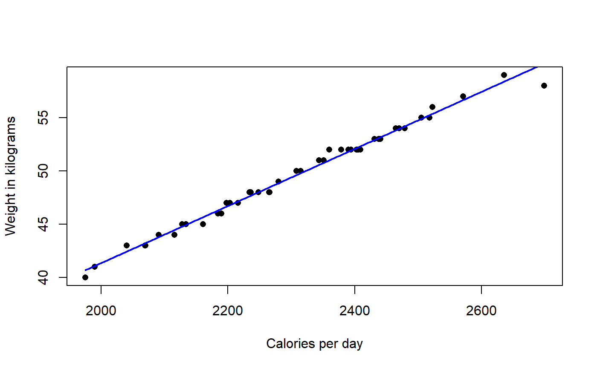
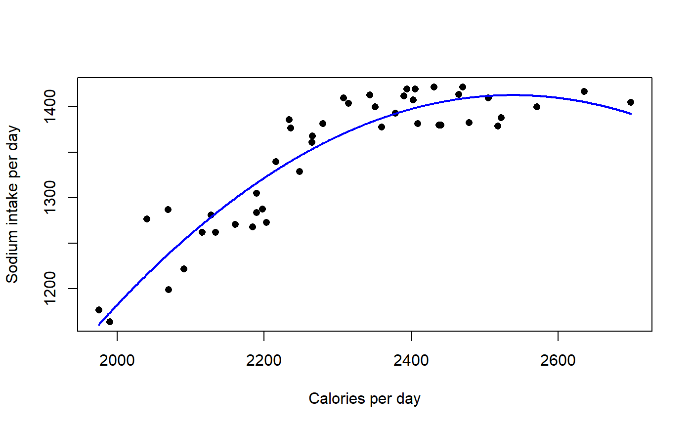
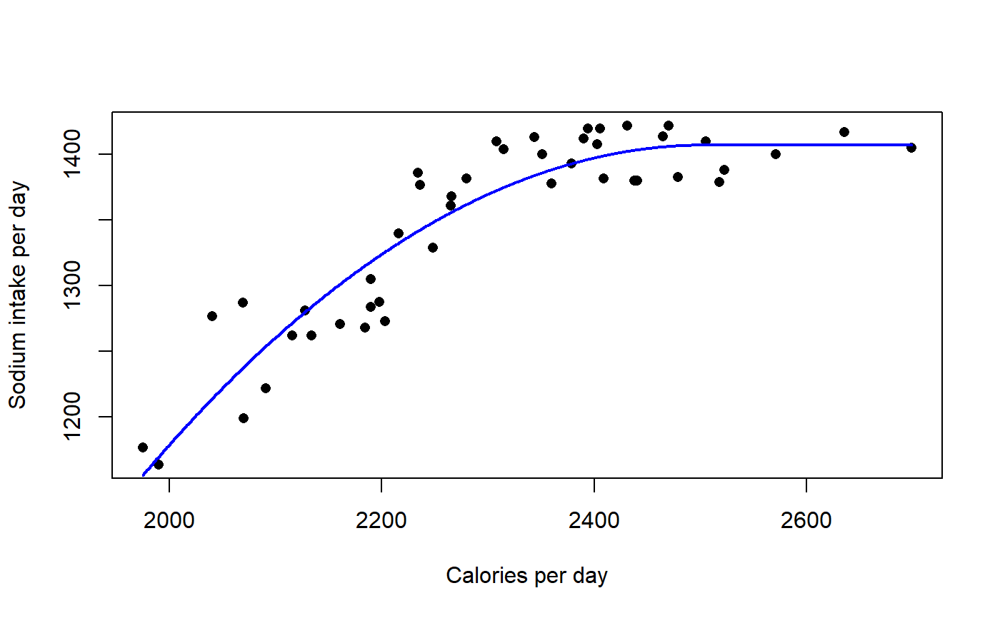
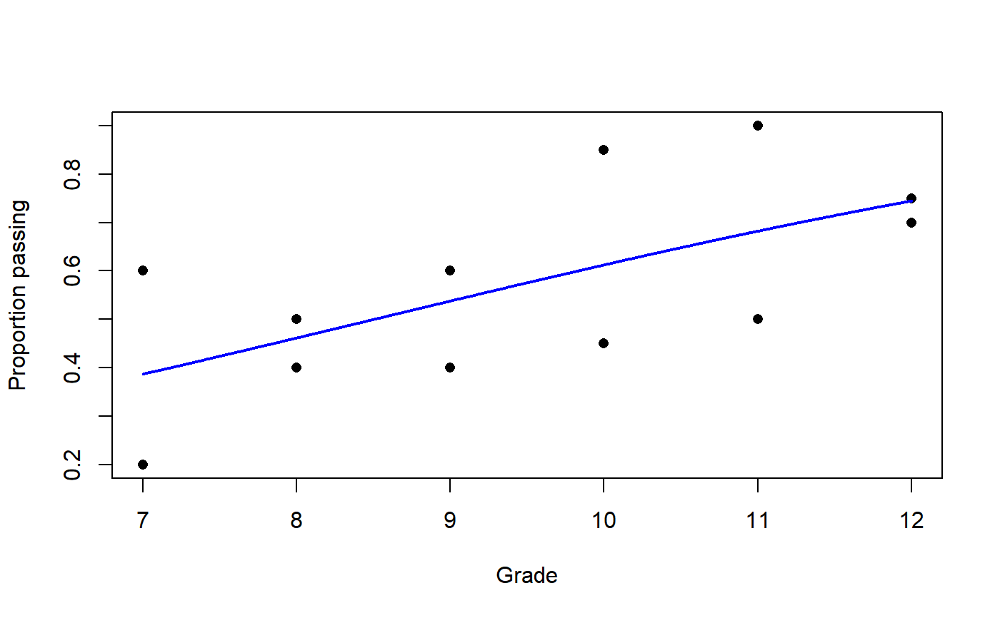

plotPredy.RdPlots the best fit line for a model with one y variable and one x variable, or with one y variable and polynomial x variables.
plotPredy(data, x, y, model, order = 1, x2 = NULL, x3 = NULL, x4 = NULL, x5 = NULL, pch = 16, xlab = "X", ylab = "Y", length = 1000, lty = 1, lwd = 2, col = "blue", type = NULL, ...)
| data | The name of the data frame. |
|---|---|
| x | The name of the x variable. |
| y | The name of the y variable. |
| model | The name of the model object. |
| order | If plotting a polynomial function, the order of the polynomial.
Otherwise can be left as |
| x2 | If applicable, the name of the second order polynomial x variable. |
| x3 | If applicable, the name of the third order polynomial x variable. |
| x4 | If applicable, the name of the fourth order polynomial x variable. |
| x5 | If applicable, the name of the fifth order polynomial x variable. |
| pch | The shape of the plotted data points. |
| xlab | The label for the x-axis. |
| ylab | The label for the y-axis. |
| length | The number of points used to draw the line. |
| lty | The style of the plotted line. |
| lwd | The width of the plotted line. |
| col | The col of the plotted line. |
| type | Passed to |
| ... | Other arguments passed to |
Produces a plot. Returns nothing.
Any model for which predict() is defined can be used.
http://rcompanion.org/handbook/I_10.html
### Plot of linear model fit with lm data(BrendonSmall) model = lm(Weight ~ Calories, data = BrendonSmall) plotPredy(data = BrendonSmall, y = Weight, x = Calories, model = model, xlab = "Calories per day", ylab = "Weight in kilograms")### Plot of polynomial model fit with lm data(BrendonSmall) BrendonSmall$Calories2 = BrendonSmall$Calories * BrendonSmall$Calories model = lm(Sodium ~ Calories + Calories2, data = BrendonSmall) plotPredy(data = BrendonSmall, y = Sodium, x = Calories, x2 = Calories2, model = model, order = 2, xlab = "Calories per day", ylab = "Sodium intake per day")### Plot of quadratic plateau model fit with nls data(BrendonSmall) quadplat = function(x, a, b, clx) { ifelse(x < clx, a + b * x + (-0.5*b/clx) * x * x, a + b * clx + (-0.5*b/clx) * clx * clx)} model = nls(Sodium ~ quadplat(Calories, a, b, clx), data = BrendonSmall, start = list(a = 519, b = 0.359, clx = 2304)) plotPredy(data = BrendonSmall, y = Sodium, x = Calories, model = model, xlab = "Calories per day", ylab = "Sodium intake per day")### Logistic regression example requires type option data(BullyHill) Trials = cbind(BullyHill$Pass, BullyHill$Fail) model.log = glm(Trials ~ Grade, data = BullyHill, family = binomial(link="logit")) plotPredy(data = BullyHill, y = Percent, x = Grade, model = model.log, type = "response", xlab = "Grade", ylab = "Proportion passing")